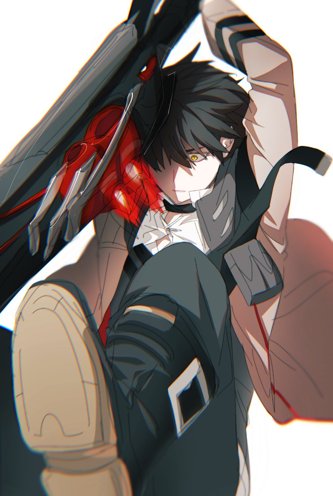
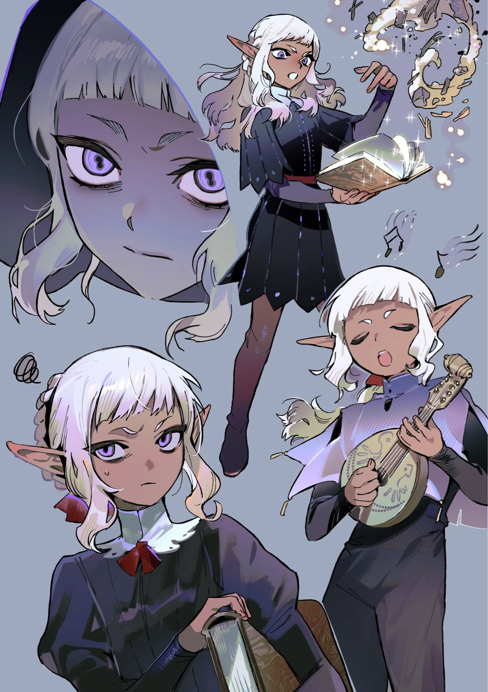

The Avaricious Huntsman
Despite being a descendant of the infamous Lacroix family, a bloodline of monster hunters whose traditions span centuries, Cassian is considered "the curse of Clan Lacroix." Once promised a prestigious inheritance, Cassian was disowned and exiled at fifteen after failing to manifest the power his family expected him to inherit, leaving him with little more than a dagger bearing their crest. Forced to survive in an unfamiliar land, he turned to thievery and deception. His fortunes changed when he encountered Dimitri Corvus, a renowned monster hunter and Dean of Valorcrest at Crastino Academy, who took him under his wing and offered him an opportunity to begin anew. Though Cassian has since found a place within the academy, the resentment of his exile and the ambitions that carried him through hardship remain. Resourceful, opportunistic, and driven by an insatiable hunger for what was denied to him, Cassian walks a precarious line between reclaiming his family's legacy and forging one entirely his own.

Fool's Diamond
Born as the second child to the Imperial Knights Captain Silas Dewey and renowned bard Revella Nuvos, Aletheo was born with great responsibility and very little power to go with it. Aletheo struggles with finding their place in anything. Although coming from an advantageous standpoint, Aletheo doesn’t feel secure within their family and feels as though they have to make up for it in absolutely everything. They have to make up for feeling… “off,” like they’re not worthy of pride. It doesn’t help that Aletheo’s sister is successful. It makes Aletheo feel like there’s a standard that they just fall short of. Yet, there is talent of their own making that is waiting to be discovered.
More to come...